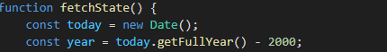

This website will completely stop working in 75 years.
The program that checks whether or not it is a Square Day takes the year and subtracts 2000
That means that after the year 3000, the code will no longer be able to detect square days.
This is provided that this website stays up and hosted, the code is still able to run, and we still have simmilar programming infrastructure to today.
As of today - May 5th, 2025 - there are only 4 more Square Days left before this website is defunct.